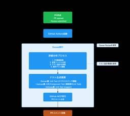

QA - freee Developers Hub
https://developers.freee.co.jp/archive/category/QA
フリー株式会社の開発者（エンジニア, デザイナー,プロダクトマネージャー, etc...）によるブログです
フィード

PRごとのテスト生成を支援するJust in Time Testという仕組み 122
122
QA - freee Developers Hub
こんにちは、freeeで支出管理領域のQAマネージャーをしているrenです。 今回は、支出管理領域のCIパイプラインにJust in Time Test（JiT Test）という仕組みを試験的に導入している話をします。 Just in Time Testとは PR作成時に、LLMを活用して生成するジャストインタイムなテストのことを指します。 MetaのMark Harman、Peter O'Hearn、Shubho Senguptaらが提唱している「Assured LLM-Based Software Testing」という研究領域に基づくものです。 論文「Harden and Catch f…
4日前

2025/9/12 JaSST'25 Niigata ソフトウェアテストシンポジウム 2025 登壇のご紹介
QA - freee Developers Hub
2025年9月12日(金)に、新潟県新潟市およびオンライン上で開催される、JaSST'25 Niigata ソフトウェアテストシンポジウム 2025に、フリーのプロダクトマネージャー森川が事例発表として登壇いたします。 タイトル: 自分たちがターゲットになりにくい業務アプリケーションのユーザビリティを担保する取り組み 内容: UI設計やそのレビューにおいて、「ユーザー視点で」という言葉を聞くことがあります。しかし、プロダクトのなかには、特定の業務に特化し、設計者や開発者自身がユーザーになりにくいプロダクトもあります。この場合、その視点はどのように獲得し、UIを設計し、検証するのでしょうか？業務…
8日前
ソフトウェアアーキテクチャに基づいた自動テスト戦略と実装ガイドライン
QA - freee Developers Hub
支出管理開発本部で事業部横断テックリードをしている @ogugu です。 広く複雑で大規模になりつつある支出管理のアーキテクチャについて、以下の連載形式でご紹介していきます。 OpenAPI ではなく TypeSpec を読み書きするスキーマ駆動開発 (本記事) ソフトウェアアーキテクチャに基づいた自動テスト戦略と実装ガイドライン 支出管理におけるマイクロサービスアーキテクチャの知見 今回は、自動テストの戦略をご紹介します。 社内展開した内容を可能な限りそのままご紹介しますので、文体についてはご了承ください。 目的 概略図 テストレイヤー毎の使い分け Unit Test Integration…
2ヶ月前
ICSTの併設ワークショップInSTAに論文が採択されたので、発表してきました！
QA - freee Developers Hub
こんにちは。支出管理領域のQAマネージャーをしているrenです。 2025年4月に行われたICST 2025の併設ワークショップInSTA 2025に事例論文が採択され現地発表してきたので、発表までの経緯や開催地の様子をレポートします。 ICSTの紹介 ICSTはIEEEの国際カンファレンスで、International Conference on Software Testing, Verification and Validationの略です。ICST 2025の開催地はイタリアのナポリで、海岸沿いのコングレスセンターが会場でした。 conf.researchr.org 発表当日のコングレ…
2ヶ月前
2025/5/21 「標準テストプロセスへの AIエージェント活用の現在地」 登壇資料
QA - freee Developers Hub
2025年5月21日に開催された、Tech-QA Meetup ～品質で未来を拓く最前線～ 内で、弊社QAE、原田が登壇した際に利用した資料情報です。 speakerdeck.com levtechcareer.connpass.com
2ヶ月前
【実践QA】テストチャーター作成からテスト実行までの実践例
QA - freee Developers Hub
こんにちは、フリーのQAマネージャーをしているymty（ゆもつよ）です。 今回は、フリーのQAにてどのようにしてテストチャーターを作って実行しているか、1年ほど前に新規リリースした「freee支出管理 小口現金」の新規開発時の、実際のテスト分析資料を元にご紹介します。 テストチャーターを書く前に、私が入る案件で行っているのが「フィーチャーの整理と論理的機能構造をつかったテスト分析」です。 言い換えれば、「このフィーチャーは内部で小さな機能がどう動いてるか、そこまで深掘りして理解した上で何をテストすべきか？」をロジカルに分解していくプロセスです。 ステップ①：マインドマップでフィーチャーを洗い出…
4ヶ月前
高速でスケーラブルなE2E実行基盤を目指して
QA - freee Developers Hub
こんにちは。SEQ (Software Engineering in Quality)のzakiです。 これまで、freeeのE2Eテストは、Selenium、RSpec、Capybara、およびSitePrismを基盤とするRubyのテストを、Jenkinsを用いて実行していました。この構成にはいくつか課題があったため、現在は PlaywrightをベースにしたTypeScriptのテストを、GitHub Actionsで実行する新構成への移行を進めています。今回はその内、JenkinsからGitHub Actionsへの実行基盤の移行について紹介します。 従来のE2E実行基盤の構成とその課…
4ヶ月前
2024年、フリーのQAエンジニアのインターンシップを超アップデートしたよ
QA - freee Developers Hub
こんにちは、QAエンジニアのyamaeriです。 フリーのQAエンジニアインターンシップも3年目の開催となりました。 インターンシップにずっと関わってきましたが、ついに今年は私がオーナーシップを持つことになりました。 そこで、新たな取り組みをいくつかしてみたので、それらも含めて紹介します。 インターンシップの目的 近年ではQAエンジニアのインターンシップを開催する企業も増えてきており、さらに転職市場でもQAエンジニアの募集やスカウトをよく見かけるようになりました。 一方で、学生にとっては「QAエンジニア」という職種の人に会う機会もなかなかなく、具体的にどのような仕事をしているのかまでは知らない…
6ヶ月前
10分でわかるfreeeのQAあえ共
QA - freee Developers Hub
こんにちは。freeeでQAのマネージャーをやってるでーにしです。 freee QA Advent Calendar2024の25日目です。 昨年は QAマネージャーやってみての失敗談 - freee Developers Hub で主に2021年までの話を書いたので、今回は2021〜のタイムラインで、今のfreeeのQAについて"あえて共有"したいと思います。freeeの価値基準に"あえて共有"というのがあるんですが、個人的にあえて、っていうのが好きなので、使いました。 実は「10分でわかるfreeeのQA」という資料があるんですが、10分以上のボリュームなので、今回は、あえ共ポイントに絞っ…
8ヶ月前
テストアーキテクチャの実践
QA - freee Developers Hub
こんにちは。決済プロダクトでQAエンジニアをしているrenです。freee QA Advent Calendar2024の23日目です。 今回は、決済プロダクト開発にテストアーキテクチャを設計した事例について紹介します。 テストアーキテクチャとは テストアーキテクチャによって解決したい課題 テストアーキテクチャ設計のステップ 1. この振る舞いを担保するためには、どのようなテストが必要だろうか？という問いを立てる 2. 抽象化して考えるための概念を学ぶ 3. テストアーキテクチャを描き、議論する テストアーキテクチャ設計のインパクト 実装改善に関する気づき テストの構造とソフトウェアの構造に関…
8ヶ月前
新卒QAのすゝめ
QA - freee Developers Hub
こんにちは。QAエンジニアをしているinachanです。 フリー以外のサービスと連携するプロダクトの一員としてQAをしています。 freee QA Advent Calendar2024 22日目です。 はじめに 私はfreee初の新卒QAエンジニアとして入社しました。QAの新卒として入ってきたのは私と12月10日のアドベントカレンダーを担当しているtonchanの2人です。 そして7月にフリー以外のサービスと連携するプロダクトにアサインされた新米QAです〜。 QAのことはもちろん、自分なりの発見をまとめていこうかなと思います。 なぜ最初のキャリアとしてQAを選んだのか そもそもQAエンジニア…
8ヶ月前
QAがスナップショットテストを書いてみた話
QA - freee Developers Hub
こんにちは、freee人事労務でQAエンジニアをしているkairiです。freee QA Advent Calendar2024 21日目です。 今回はプロジェクトの中で実際にあった、不足しているテスト（自動テスト）をQAが書いてサポートした事例、およびそこからシステムの内部構造に踏み込んだ改善提案をした事例を紹介します。 きっかけ 複雑な表示ロジックを持つUIのリファクタに関わることになった際に、パターンが多すぎて目でチェックすることが非効率に感じたことがあり、なんとか楽ができないかと考えました。 実際のデシジョンテーブル。ほんの小さなコンポーネントに対してこの複雑度。 しかし該当箇所には複…
8ヶ月前
権限管理基盤チームのCIの仕組みと課題
QA - freee Developers Hub
こんにちは。権限管理基盤チームでQAをしているyukkyです。 freee QA Advent Calendar2024 20日目です。 所属してるチームで運用しているCIの仕組みと課題について書こうと思います。 CI作成の背景 権限管理基盤チームでは、権限制御を担うマイクロサービスを開発しています。 このプロダクトはUIが少なく、APIテストを中心にしたテストを行っています。 機能追加のたびにテストシナリオを追加し、蓄積したテストシナリオは、リグレッションテストとして再利用しています。 以前の開発フローでは、PR単位でローカル環境にてリグレッションテストを実行していましたが、 シナリオ数の増…
8ヶ月前
テスト管理ツールを移行してみた 〜ツール転生させてQA無双〜
QA - freee Developers Hub
こんにちは。freee人事労務でQAエンジニアをしているnunです。 freee QA Advent Calendar 2024 19日目です。 昨年freee QA Advent Calender 2023にて下記テスト管理ツールの移行について投稿しました。 developers.freee.co.jp 本日はその後どうだったの？というところを投稿したいと思います。少し長いので必要に応じて後述の目次もご活用ください。 さて、タイトルでネタバレはしてしまっているのですが… お陰様でTestRailからZephyr Scaleへのテスト管理ツール移行は無事完了しました！！！ 結果として1年間がか…
8ヶ月前
社内QAメンバーにとったアンケートをまとめたよ
QA - freee Developers Hub
こんにちは。freee人事労務でQAエンジニアをしているしほです。 freee QA Advent Calendar 2024 18日目です。 なぜこのアンケートを実施しようと思ったのか QAの仕事は多岐にわたり、普段自身が業務をしている時に今すごく楽しいなと思うことが沢山あるのですが、他のQAの方をみていたり話していると人によって楽しいなと思う所が違ったりするのでは？と思い始めました。 QA業務の魅力についても人によって考え方が違いますし、アンケートをとってみました。 17名から回答を頂いたのでそれを発表したいと思います！ アンケートの概要 アンケート対象者フリーでQAエンジニアとして働くメ…
8ヶ月前
障害に立ち向かう！QAエンジニアの1年間のアクション
QA - freee Developers Hub
こんにちは。QAエンジニアをしているtoyopiです。 フリー以外のサービスと連携するプロダクトの一員としてQAをしています。 freee QA Advent Calendar2024 17日目です。 去年に引き続きアドベントカレンダーを執筆しております!! developers.freee.co.jp はじめに 約1年前、私は今の開発チームに配属されました。 悲しいことに、このチームは社内で1、2位を争うほど障害（※）が多いチームです…。 このチームが開発するプロダクトで起きる障害の中には、外部連携先に依存する原因もありなかなか一筋縄ではいかない現状です。 そうは言っても、ユーザーにとっては…
8ヶ月前
産休とってみた
QA - freee Developers Hub
こんにちは、freee会計でQAエンジニアをしている kana です。 freee QA Advent Calendar2024 16日目です。 私は2023年7月に産休に入り、2024年4月に職場復帰をしました。 今回の記事では、出産と育休中の生活と復帰後の働き方について書いてみようと思います。 生後2日目の手の写真 産休を取るまでのこと QAで初めての産休 社内では産休・育休を取るメンバーはいたものの、QAエンジニアで産休を取得する人は私が初めてでした。部署では前例がなかったので色々とジャーマネ※と手探りしながら進めたところもありましたが、社内では産育休に対するフォロー体制が整っており、安…
8ヶ月前
runnを用いたバックエンドテストの試行錯誤の変遷とこれから
QA - freee Developers Hub
こんにちは。2023年のQA Advent Calendarを見てfreeeのQAに興味を持ち、転職。そして本年のAdvent Calendarの内の1日を担当することになりました。決済プロダクトのQAエンジニアのsunnyです。 チームではアジャイルQAのスタイルを採用しており、要求・要件定義からユーザーストーリーを作成し、開発者とやりとりしながら仕様の理解を深めつつ、テスト分析・設計を行っています。 本記事はバックエンドQAで実践してきた、runnというツールを用いた変遷と、その先の展望についてのお話です。 この記事はfreee QA Advent Calendar 2024 - Adve…
8ヶ月前
From SQL Developer to QA Engineer: Shifting from Database Development to API Testing
QA - freee Developers Hub
Hello, mina-san! I'm Kim, a QA engineer from EMP Growth Team. Our team is tasked to prevent user’s churn due to incomplete functionality of freee-payroll and we generate cross-selling from freee-payroll to other products. This is the thirteenth day of the freee QA Advent Calendar 2024. Getting Start…
8ヶ月前
Why Accessibility Matters: A QA Engineer’s Journey to Inclusive Testing
QA - freee Developers Hub
Hi everyone! I'm Aireen, a QA engineer from the Employee Portal team. We're the ones behind the web application that connects administrators and employees seamlessly across all freee products. Can you believe it? We're already on the twelfth day of the freee QA Advent Calendar 2024—almost halfway th…
8ヶ月前
ページオブジェクトモデルを採用しているE2Eテスト基盤の実装Tips
QA - freee Developers Hub
こんにちは。SEQ (Software Engineering in Quality)のnakamuです。 freee QA Advent Calendar2024 11日目です。 これまで、freeeのE2EテストツールはSelenium+RSpec+Capybara+SitePrismをベースにした独自基盤を利用してきました。 この基盤は、2016年からページオブジェクトモデルを採用し、今日に至るまでE2Eテストの保守および運用を支えてきました。 今年度からは、Playwrightを基盤にした新しいE2Eテスト環境への移行を推進しており、新基盤でも引き続きページオブジェクトモデルを使用して…
8ヶ月前
新卒QA奮闘記：ひとりでQAプロセスを完走して見えたもの
QA - freee Developers Hub
こんにちは。決済プロダクトでQAエンジニアをしているtonchanです。 freee QA Advent Calendar 2024 - Adventarの10日目です。 はじめに 私はfreee初の新卒QAエンジニアの１人として入社しました。7月に決済プロダクトにアサインされ、2024/12/10 時点で5ヶ月目の新米QAです。 今回の記事ではfreee新卒QAの一部業務をお伝えできればと思います。 QAエンジニアの仕事とか実際何するんだろうと想像しづらい面もあると思いますので、就活中の方にもぜひ参考の１つにしていただけると幸いです。 なぜ最初のキャリアとしてQAを選んだのか 新卒でいきなり…
8ヶ月前
リグレッションテストを見直す
QA - freee Developers Hub
こんにちは。freee会計のQAエンジニアをしているbabaです。 freee QA Advent Calendar 2024 - Adventar 9日目です。 freeeでは、AppStoreとGooglePlay向けにモバイルネイティブアプリを展開しています。私は、その中でfreee会計アプリを含むいくつかのアプリを担当しています。 リグレッションテストの課題 モバイルアプリではリリース前に各ストアの審査が必要で、本番障害が起きた時に修正までのリードタイムがWebアプリより長くなってしまいます。そのためにバグを流出させたときのユーザ影響が大きくなりがちで、流出前にバグを検出するためのリグ…
8ヶ月前
ハッピーの重篤度でみんなで品質の目線合わせをするぞ！
QA - freee Developers Hub
こんにちは。freeeのQAで品質企画を担当しているymtyです。 freee QA Advent Calendar2024 8日目です。 今回のテーマである、ハッピー（不具合のこと）の重篤度でみんなの品質に対する目線合わせをしていることについては、2024年のfreee技術の日でも同様のタイトルでプレゼンを行いました。その時のスライドや動画も公開されています。 speakerdeck.com www.youtube.com このプレゼンの内容を元にしながらも、そもそも重篤度（Severity）ってどういうものか？ということと、freeeでは重篤度についてどんな取り組みをしてるのか？がわかるよ…
8ヶ月前
理想の働き方を実現するための、自分だけの快適なリモート・オフィス環境 〜freee QAエンジニア 2024年版〜
QA - freee Developers Hub
QAエンジニアの多様なリモート・オフィス環境を探る。個性あふれるデスクやモニタ、癒しアイテムが勢ぞろい！
8ヶ月前
チームで実例マッピングをやってみた
QA - freee Developers Hub
こんにちは freee会計のQAエンジニアをしているsugenoです。 freee QA Advent Calendar 2024 - Adventar 5日目です。 私が所属する開発チームで、実例マッピングを作ってチーム内での要件整理/検討を行ったのでその取り組み内容について書いていこうと思います。 そもそも実例マッピングとは、ストーリーをルールと例に構造化して要件を明確にする手法で 今回はV字モデルでいうと要求定義/要件定義/基本設計の部分を範囲として実施してます。 V字モデル 引用元：https://speakerdeck.com/nihonbuson/example-mapping?s…
8ヶ月前
仕様検討段階でのQAの関わり方やチームでの品質保証について
QA - freee Developers Hub
こんにちは。freeeでQAエンジニアをしているkenseiです。 freee QA Advent Calendar2024の4日目です。 QAとしてある程度経験を積むと「もっと上流から関わっていきたい」という意識が出てくるという話をよく聞きます。 そこで今回は「QAが上流から関わる」というのは具体的に何をしているのか、どういったメリットがあるのかについてや、チームでやっている取り組みについて書こうと思います。 はじめに まずはfreeeでは実装に入る前にどういった工程があるのか、私が所属している開発チームを例に見てみましょう。 成果物 詳細 オーナー Brief開発のきっかけとなる課題や背景…
8ヶ月前
アジャイルQAってなんだ？をみんなで考えた話
QA - freee Developers Hub
こんにちは。freee人事労務でQAエンジニアをしているsaeです。 freee QA Advent Calendar2024の3日目です。 私は長いことSIerとしてPM/ITSMの道を歩んできましたが3年前にQAエンジニア（以下、QA）にキャリアチェンジしています。そして2024年の9月にfreeeにQAとして転職してきました。 アジャイル開発にとびこんでQAという職種に出会った当初、色んなことの曖昧さに戸惑いました。スクラム開発では職能の明確な線引きはないし、QAに求められる技量も見渡す限りチームによって様々。自分のスキルでどうやって組織に貢献して行ったらいいんだろう...？ と悩みはじ…
8ヶ月前